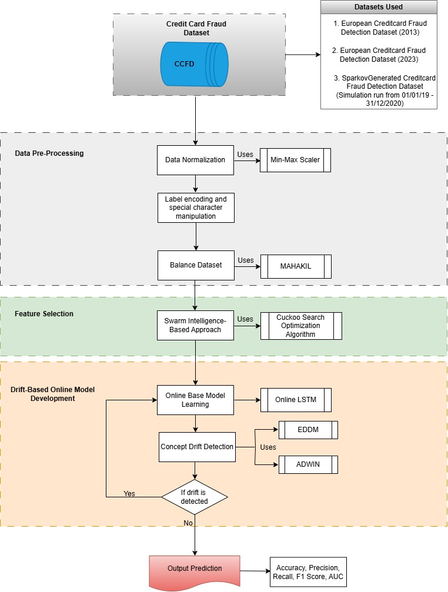
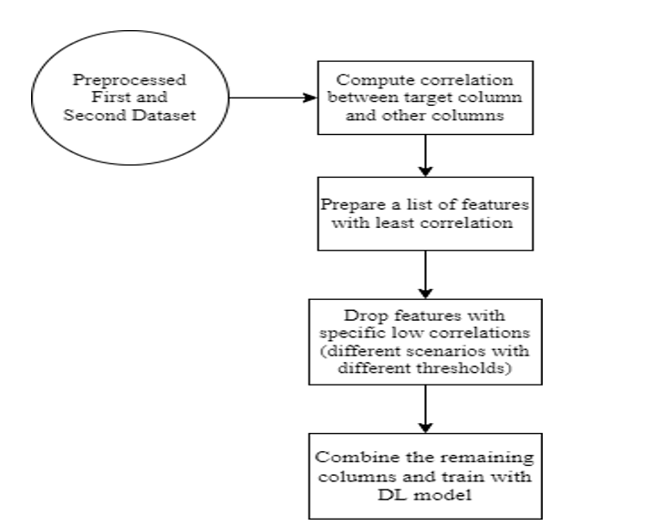
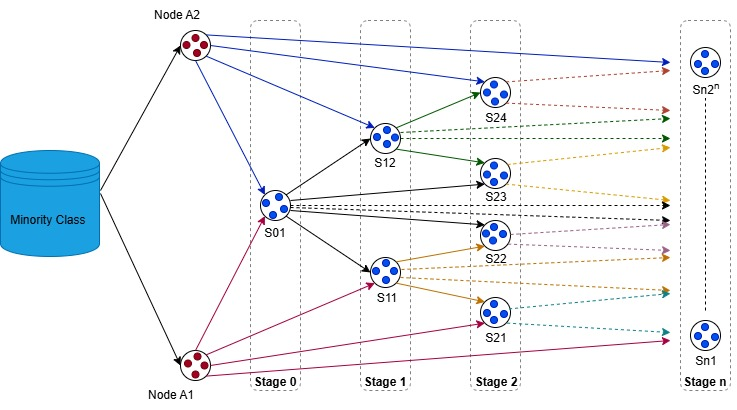
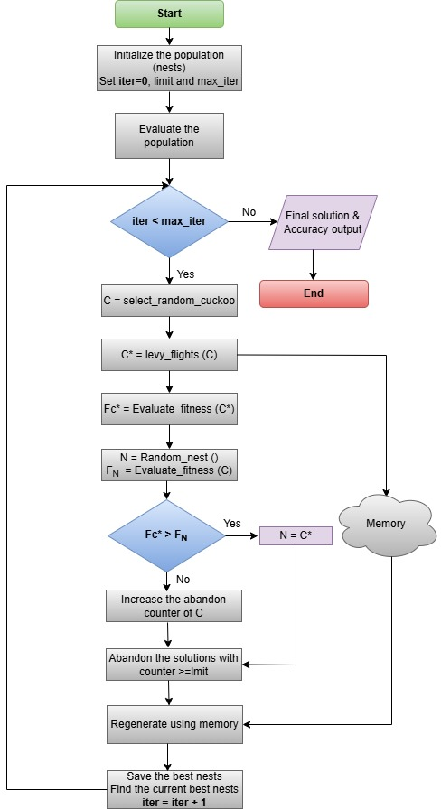
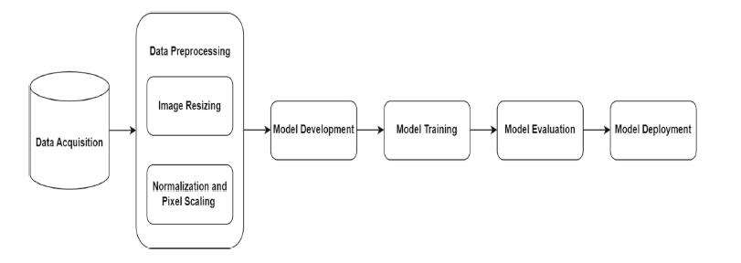
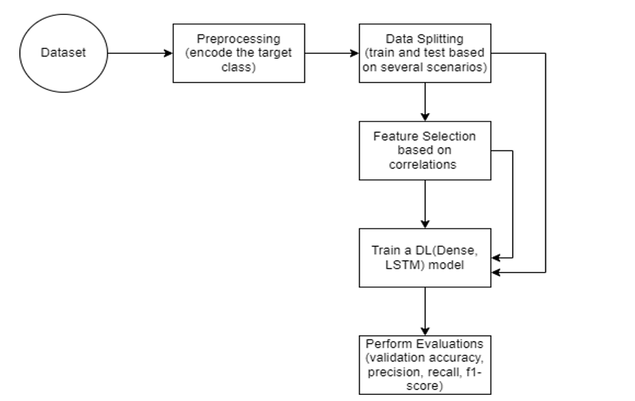
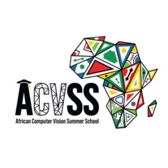

About Me
I am a Machine Learning Researcher at the Data Intelligence and Swarm Analytics Laboratory (DISAL) in the Department of Computer Science, University of Ghana, and Founder at Cortex Consult. My core research interests span Adaptive Machine Learning, Concept Drift Detection, Swarm Intelligence / Metaheuristic Optimization, and Computer Vision.
I have mentored undergraduate students conducting machine learning research applied to real-world challenges in public health diagnostics, financial cybersecurity, and agriculture.
PhD Candidacy: I am actively seeking and exploring PhD positions for Fall 2027 in Computer Science and Machine Learning. If your lab is working on adaptive learning, streaming data drift detection, or vision transformers, please feel free to reach out!
Academic Background
-
MSc in Computer Science — University of GhanaSep 2024 — Sep 2025
-
BSc in Computer Science — University of GhanaAug 2019 — Sep 2023
News
- Sep 2026: Invited to present a research talk at the Google AI Community Center (AICC) as part of their monthly Student Research Tech Talk series.
- Aug 2026: Attended and engaged in workshops at the Deep Learning Indaba in Lagos, Nigeria.
- Jul 2026: Selected for the African Computer Vision Summer School (ACVSS) hosted at the Google AI Community Center.
Research Vision
My long-term research goal is to advance adaptive, drift-resilient, and trustworthy artificial intelligence systems capable of continuous online learning in non-stationary streaming environments.
Selected Publications
SARS Detection in Chest CT-Scan Images Using Bootstrapped ViT-B16 Model
Springer, Iran Journal of Computer Science (2025)

Adaptive Memory-Based Cuckoo Search for High-Dimensional Feature Optimization in Non-Stationary Fraud Detection Systems
Under Review / Manuscript (2026)

Resampled Correlation-Based Feature Descriptors: A Novel Approach to Enhancing Malware Detection Capabilities
Preprint at Research Square (2023)

Adapting Triple BigGAN for Image Detection Tasks: Challenges and Opportunities
Preprint at Research Square (2023)
Enhancing Unsupervised Signature Verification Through Advanced Feature Extraction Techniques
Preprint at Research Square (2023)
Selected Projects
Adaptive Drift-Aware Credit Card Fraud Detection Framework
Developed a drift-aware Credit Card Fraud (CCF) detection framework leveraging an online Long Short-Term Memory (LSTM) architecture integrated with ADWIN and EDDM drift monitors. Engineered a Memory-Based Cuckoo Search (MCS) metaheuristic algorithm for high-dimensional feature selection and integrated MAHAKIL chromosomal-oversampling to conquer extreme class imbalance (>99% accuracy across European cardholder benchmark datasets).


ViT COVID-19 & SARS Detection Application
Mentored and collaborated with undergraduate researchers on computer vision architectures applying Bootstrapped Vision Transformers (ViT-B16) to chest CT-scan slices, facilitating accurate and early identification of pulmonary SARS and COVID-19 lesions.


Malware Detection via Resampled Correlation Descriptors & LSTM
Constructed a recurrent deep learning pipeline utilizing resampled correlation-based feature descriptors to capture subtle behavioral anomalies in mobile malware, achieving 98% classification accuracy over benchmark threat repositories.

Talks & Research Gallery
Presentations, academic engagements, and student mentorship sessions at the Google AI Community Center (AICC) and international research venues.


Communities & Affiliations



African Computer Vision Summer School
Local Organizer (Ghana Chapter)
Contact
I welcome collaborative research inquiries, academic discussions, and PhD advisor interactions in Adaptive ML, Concept Drift, Swarm Intelligence, and Computer Vision.